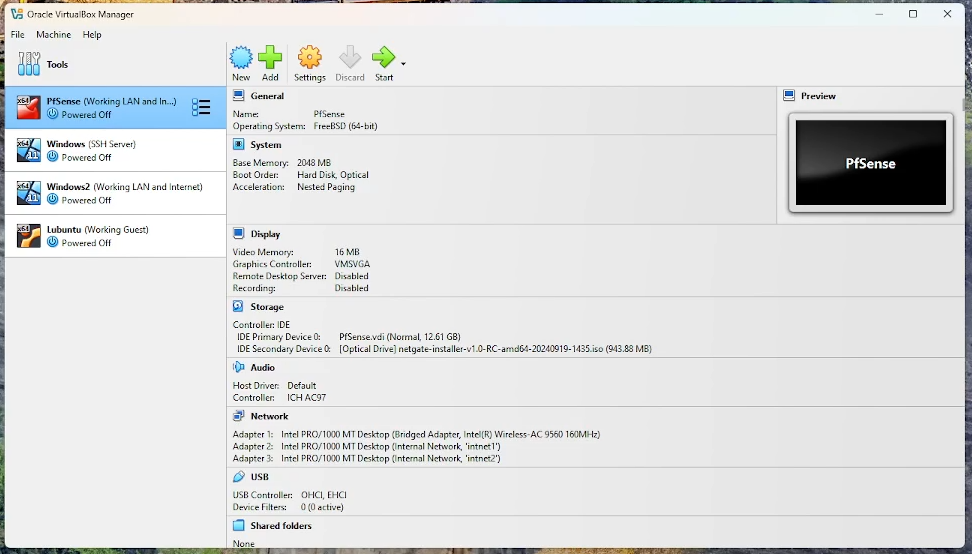
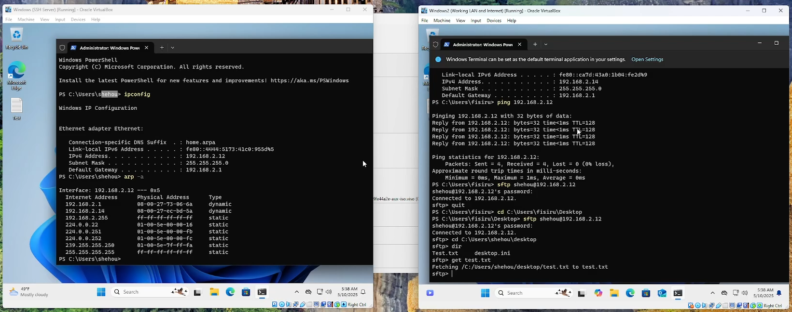
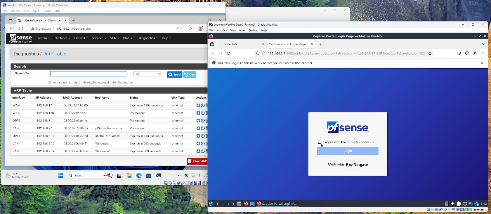

Network Segmentation Simulation
Purpose:
The goal is to create a network setup that segments different parts of a network into isolated areas, making it more secure and organized. This can help reduce risks of network breaches and improve performance by limiting broadcast traffic.
Setup:
pfSense is used as a firewall/router to manage and segment the network. Four VMs were created, with one running the pfSense OS, two running Windows and one running Lubuntu. The Windows VMs were placed on one subnet, while the Lubuntu VM was placed on another. The VMs are connected through pfSense, which controls traffic between the segments.
Key Features:
• Network Segmentation: VMs are segmented into different subnets, a main network, and a guest network.
• Security: pfSense controls communication between these segments, ensuring that sensitive data is isolated from other parts of the network.
• File Sharing via SFTP: Demonstrated how two VMs on the same subnet can communicate via SFTP to share files securely.
• Captive Portal: A separate subnet (for guests) includes a captive portal, limiting access to the network and improving security for users on the guest network.
Virtual Box:

Pictured here is my virtual box setup, featuring the 4 VMs I used to conduct this project. The pfSense router has 3 network adapters, as seen in the network tab. The first one is a bridge adapter responsible for connecting the system to the internet via the host machine’s connection, and sharing that connection with the internal networks. The other two adapters are for internal networks, one private network where devices can communicate with each other, as well as one guest network.
pfSense:
 Pictured here is the pfSense console, showcasing the network comprised of the three subnets, 192.168.1.X, 192.168.2.X, and 192.168.3.X. The WAN interface is on the 192.168.1.X subnet, the same subnet the host system. The LAN where the Windows VMs will lie is bound to the 192.168.2.X, isolating it from the host network. The guest network is bound to the 192.168.3.X subnet, isolating it from all other traffic.
Pictured here is the pfSense console, showcasing the network comprised of the three subnets, 192.168.1.X, 192.168.2.X, and 192.168.3.X. The WAN interface is on the 192.168.1.X subnet, the same subnet the host system. The LAN where the Windows VMs will lie is bound to the 192.168.2.X, isolating it from the host network. The guest network is bound to the 192.168.3.X subnet, isolating it from all other traffic.
File Transfer:

Pictured here are my two Windows VMs communicating with each other over the network. You can see the devices recognizing each other on the ARP table, successfully pinging each other, and a text document being transferred over the network via SFTP.
Guest Network:

Pictured here are the pfSense web interface and the Lubuntu VM. On the pfSense web interface, you can see an ARP table showcasing every device connected to the router. You can see the Windows VMs as well as the Lubuntu VM on different subnets. On the Lubuntu VM, you can see the Captive Portal that the user must interact with in order to join the network.
Video:
Here is the video of me simulating the network environment.